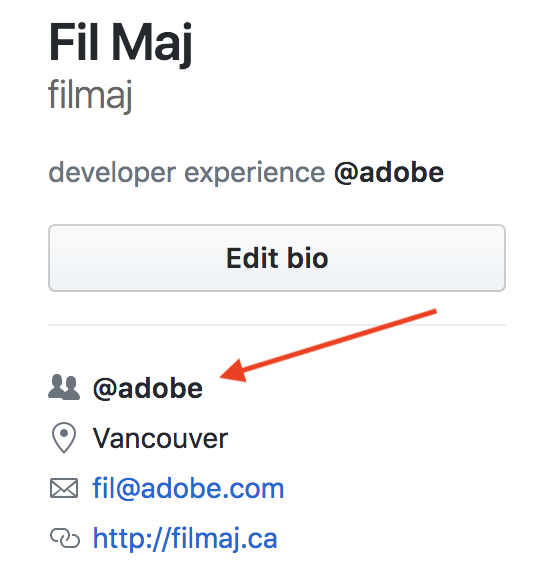
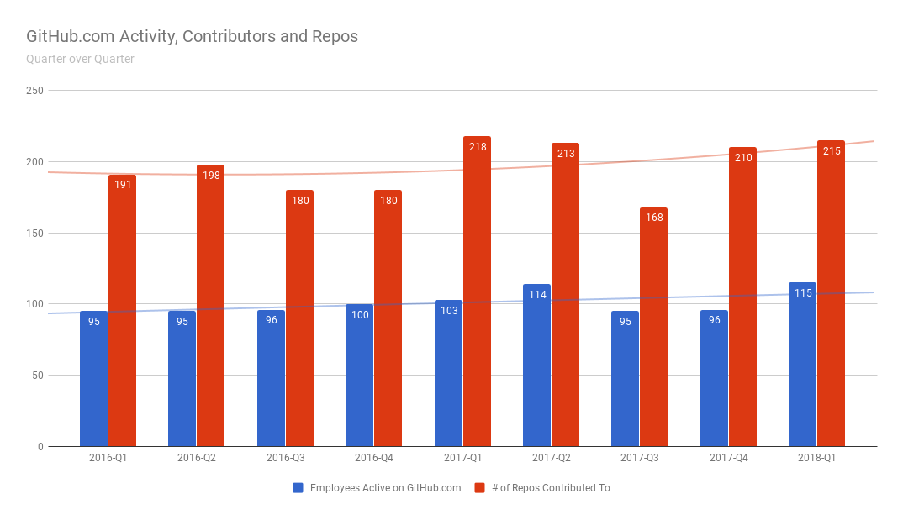
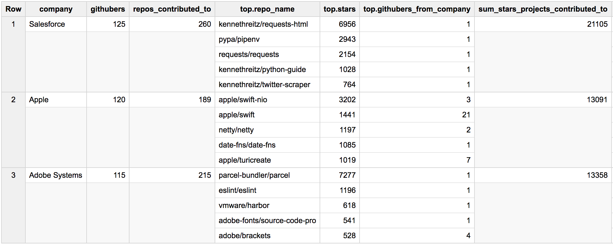
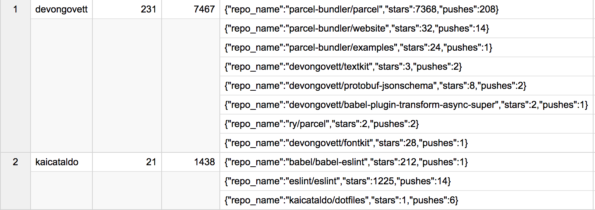
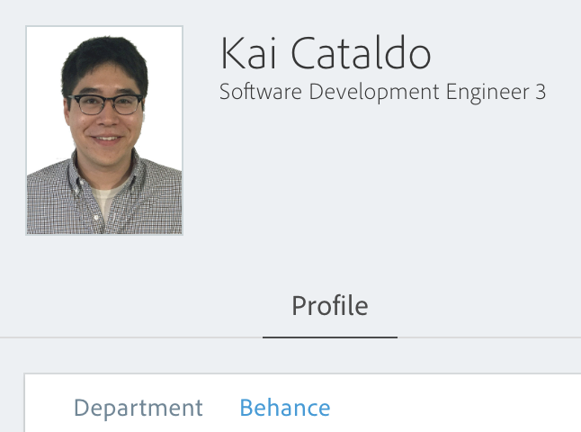

Adobe's Involvement in Open Source A Look At The Numbers
🍻 Filip Maj
🎮 Senior Computer Scientist
🌱 Developer Ecosystem
Why is Open Source Involvement Important?
Adobe Experience Platform
"Four priorities at the highest level. Number one: Cloud Platform. This is one of the biggest bets the company is making. The days of us building siloed stacks are not going to serve us well in the future. Three foundational bets that Adobe made two years ago: multi-cloud, content platform and data platform. Content is uniquely ours, and we cannot afford to have fifteen different content repositories that are disconnected and siloed."
⚗️ Value provided is distilled down to its essence - "Content is uniquely ours"
🏗 A foundation exists for value generation (e.g. product creation and sales) to be opened up to third parties
TL;DR: what 🆒 stuff can others build on top of Adobe content, data and services?
Who Do We Care About?
Developers, developers, developers
Developer Experience Matters
A good experience necessitates:
📝 Up-to-date, accurate and tested docs
🍤 Code samples
📦 Functional SDKs & Client Libraries
📞 Responsive support for these assets
Why all of this? So that devs can get to “Hello World” fast and start using our platform ASAP
This Is Not Easy
Keeping these assets up to date and providing support is challenging
Open Source Is The Way
The industry-standard way of achieving this is to place these assets in the hands of the developer community 👨👩👧👦
🚜 Adobe developers end up working elbow-to-elbow with our customers - who are also developers
🌱 In this way we plant the seeds of a developer ecosystem that is critical to the business
It Seems That We Understand This
"We hope [open-sourcing this library we developed internally at Adobe] will increase Adobe presence and visibility in the Machine Learning community as we contribute back to the community. At the same time, this effort will also help with our platform’s adoption."
... but who puts their company email in their git config, amirite? ✉️
What We Changed
🛒 Every month, we gather all Github usernames that were active that month on Github with at least one commit to a public project - about ~1.3 million usernames.
🔨 We then pound the Github REST API to pull out the "Company" field from the user's Github profile: 
⏰ (this takes about 72 hours)
🚢 We store these user-company associations in our own SQL DB, and import into Google BigQuery when we need to, for easy cross-referencing with githubarchive.org Github activity data
Adobe Contributors and Projects, Quarter over Quarter

Adobe vs. Top Competitors, Q1 2018

What About Individuals at Adobe?
🤗 How can we recognize active Adobians?
A Sneak Preview

Thanks, Devon and Kai! 👏

More Work To Be Done
Sorely needed: count other kinds of contributions
Issues created / commented on / closed
Pull requests issued / reviewed / merged
These are valuable contributions that we need to acknowledge, too.
A Plea
📈 Those of us here understand that Open Source is a process that makes superior software in less time.
☹️ So why are we as Adobe, overall, so slow to engage and contribute back?
📣 Be vocal about helping to nurture our developer ecosystem! Demand your team contributes back to the open source projects it inevitably relies on!
❓ Ask your Director or VP next time you have a chance: why aren't we more involved in open source?
Adobe + Open Source = ❤️
With greater open source involvement, Adobe can gain the trust of the wider development community faster while positively investing in its employees and driving more usage to its platform.